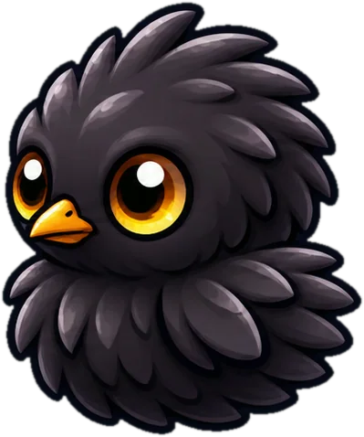

 Wind
WindTap a stage to read its story.
Tiny and jet-black from beak to tail-stub, this fluffy Shadow Cave hatchling has enormous amber eyes that catch even the faintest phosphorescent glow. Its round head is mostly feathers, and it wobbles on stubby legs through the cave passages, pecking at mineral dust and humming to itself. Explorers who camp in the caves sometimes find a Corvling nestled in their hood, drawn by the warmth of a steady heartbeat.
Field note: It emits a faint subsonic hum while sleeping - nearby candles flicker in time with it.
Shadow Caves. Corvling and its family are found in the Shadow Caves. See everyone who lives there.
Share a Bond Food that matches its types to become friends. Corvling loves:
A Bond Food is not a trick. It joins your spirit with the Kimuro's spirit, and only when it chooses you.
Print the Kimuro adventure packs: mazes, cards, a board game and Bond Mark medals.
See the printable packs